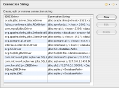
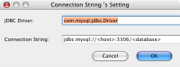
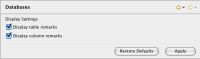
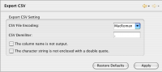
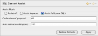
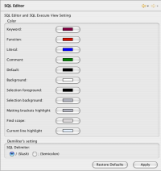
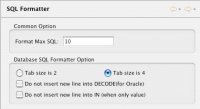
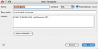

Contents |
What
This page explains the preferences for the Database Explorer and how to customize them. These can be reached by opening the Preferences window to Aptana > Database Explorer.
How
Connection String
  Connection String
Connection String
{kind=link}
The connection string screen shows you all of the configured connection strings. You can add a connection string by clicking the "new" button. To edit an existing connection, select it from the list, then click the "edit" button.
 Edit Connection String
{kind=link}
A pop-up window will let you enter the name and connection string. The connection string information must use an existing JDBC Driver.
Databases
 Databases
{kind=link}
Checking "Display Table Remarks" will show comments associated with that table.
Checking "Display Column Remarks" will show comments associated with that column.
Export CSV
 Export CSV Prefs
{kind=link}
You can select the file encoding for exported files.
You can set your CSV delimiter to anything you like by typing your preferred delimiter in the box. The default is a comma (,).
To prevent the first line of your file from having the column names listed, check The column name is not output.
To prevent values in the file from being enclosed in quotes, check, "The character string is not enclosed with a double quote".SQL Content Assist
 Content Assist Prefs
{kind=link}
This screen lets you enable or disable SQL Content Assist. Like other content-assist tools, this pops-up a list of recommended completions while you are typing to help speed you up.
Selecting Auto Assist Keyword will only attempt to complete SQL keywords.
SQL Editor
 SQL Editor Prefs
{kind=link}
On this screen you can customize the colors for your SQL syntax highlighting when using the SQL Editor View.
SQL Formatter
 SQL Formatter
{kind=link}
The format section allows you to specify the Format SQL number.
Also, you can specify the tab size as being 2 or 4. You can turn off the insertion of new lines inside of a DECODE statement (for Oracle only).
You can also turn off the insertion of a new line in an IN clause.SQL Templates

SQL Templates are used with the SQL Content assist to aid and optimize SQL creation.
To edit a template, click on the template in the list and click the edit button. To add a new template, click the add button.
 Add New SQL Template
{kind=link}
A new pop-up window will let you edit details of the template.